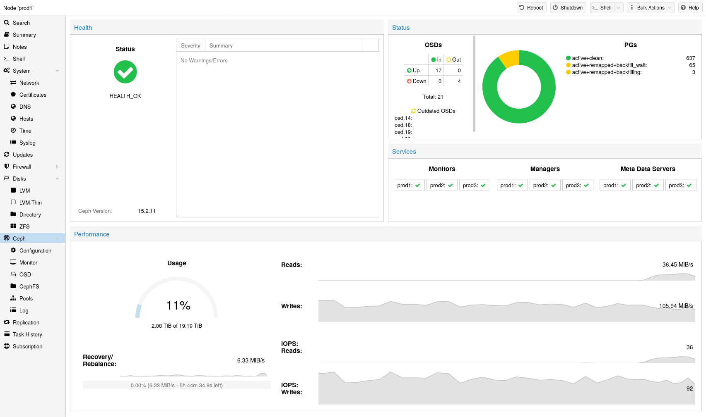
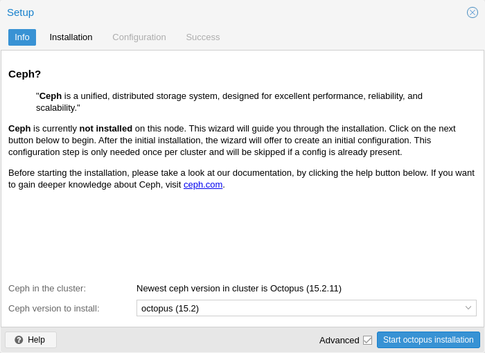
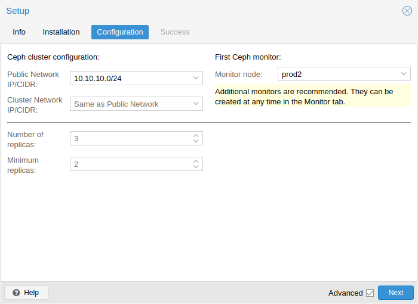
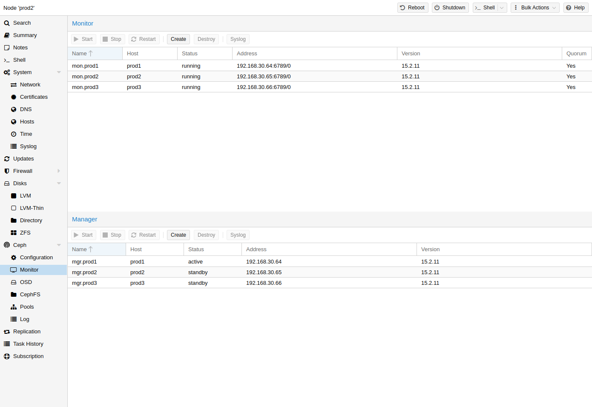
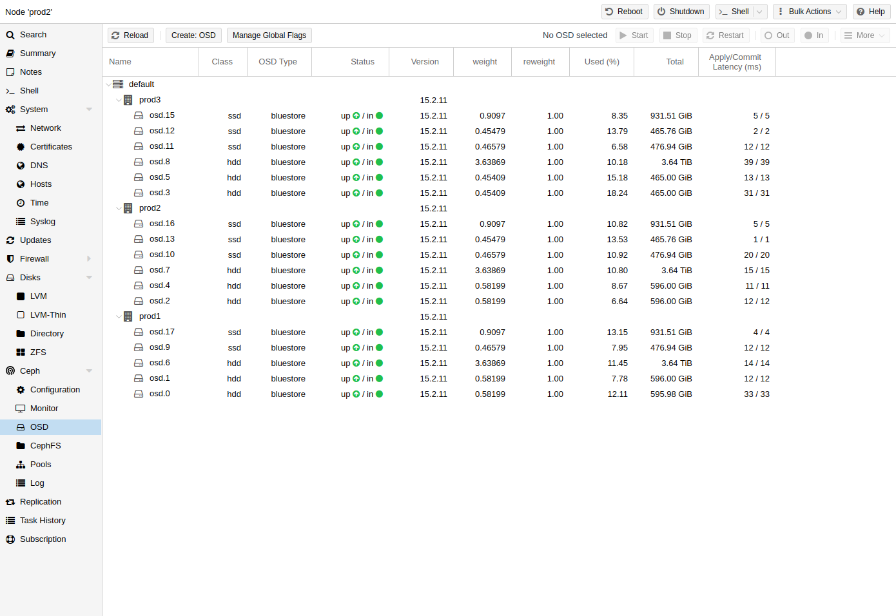
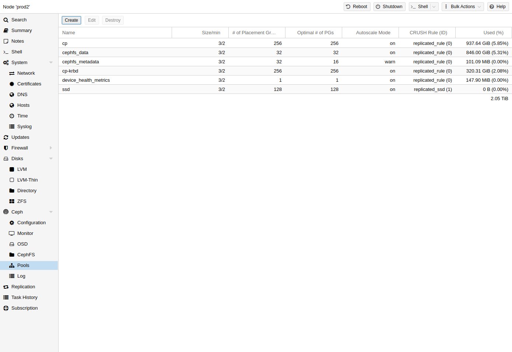
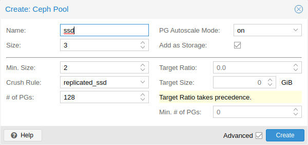
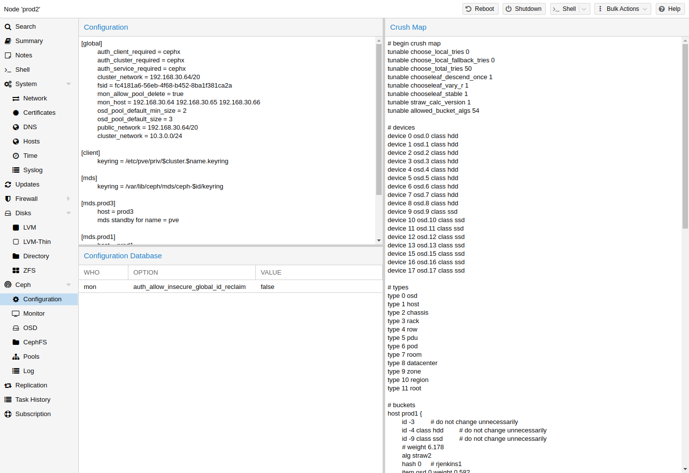
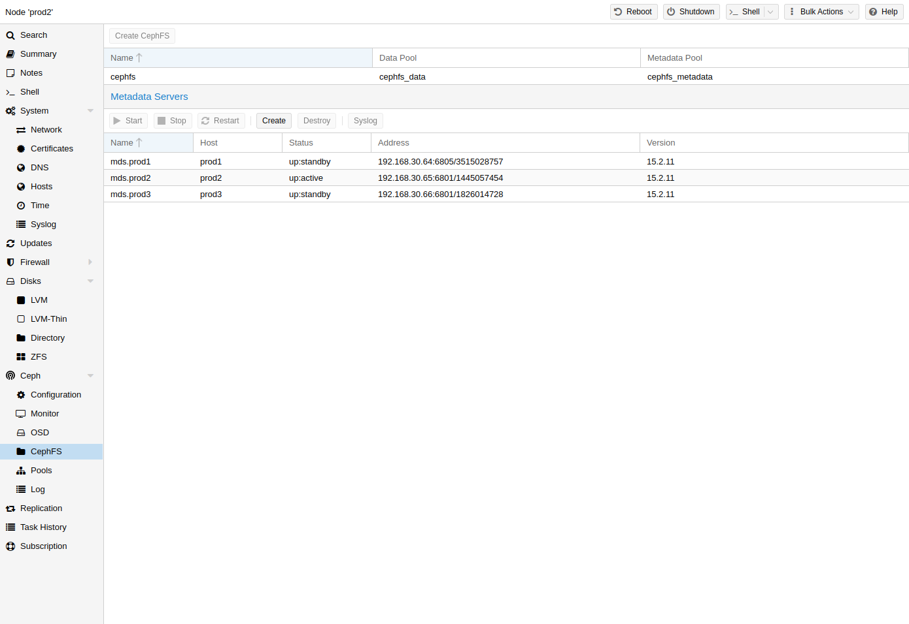

8. 하이퍼컨버지드 Ceph 클러스터#
8.1. 소개#

Proxmox VE는 컴퓨팅 및 스토리지 시스템을 통합합니다. 즉, 클러스터 내에서 동일한 물리적 노드를 컴퓨팅(VM 및 컨테이너 처리)과 복제 스토리지에 모두 사용할 수 있습니다. 컴퓨팅 및 스토리지 리소스의 기존 사일로를 단일 하이퍼 컨버지드 어플라이언스로 묶을 수 있습니다. 별도의 스토리지 네트워크(SAN)와 네트워크 연결 스토리지(NAS)를 통한 연결이 사라집니다. 오픈 소스 소프트웨어 정의 스토리지 플랫폼인 Ceph와 통합된 Proxmox VE는 하이퍼바이저 노드에서 직접 Ceph 스토리지를 실행하고 관리할 수 있습니다.
Ceph는 뛰어난 성능, 안정성 및 확장성을 제공하도록 설계된 분산 객체 저장소 및 파일 시스템입니다.
 Proxmox VE에서 Ceph의 장점
Proxmox VE에서 Ceph의 장점
CLI 및 GUI를 통한 간편한 설정 및 관리
씬 프로비저닝
스냅샷 지원
자체 복구
엑사바이트 수준으로 확장 가능
블록, 파일 시스템 및 개체 스토리지 제공
다양한 성능 및 중복성 특성을 가진 풀 설정
데이터가 복제되어 내결함성이 있음
일반 하드웨어에서 실행
하드웨어 RAID 컨트롤러가 필요 없음
오픈 소스
소규모에서 중규모 배포의 경우 Proxmox VE 클러스터 노드에 직접 RADOS 블록 장치(RBD) 또는 CephFS를 사용하기 위한 Ceph 서버를 설치할 수 있습니다(Ceph RADOS 블록 장치(RBD) 참조). 최신 하드웨어에는 CPU 성능과 RAM이 많으므로 동일한 노드에서 스토리지 서비스와 가상 게스트를 실행할 수 있습니다.
관리를 간소화하기 위해 Proxmox VE는 내장된 웹 인터페이스나 pveceph 명령줄 도구를 사용하여 Proxmox VE 노드에 Ceph 서비스를 설치하고 관리할 수 있는 기본 통합 기능을 제공합니다.
8.2. 기술#
Ceph는 RBD 저장소로 사용하기 위해 여러 Daemon으로 구성되어 있습니다.
Ceph Monitor(ceph-mon 또는 MON)
Ceph Manager(ceph-mgr 또는 MGS)
Ceph Metadata Service(ceph-mds 또는 MDS)
Ceph Object Storage Daemon(ceph-osd 또는 OSD)
8.3. 안정적인 Ceph 클러스터를 위한 권장 사항#
하이퍼 컨버지드 Proxmox + Ceph 클러스터를 구축하려면 설정에 최소 3개(바람직하게는) 동일한 서버를 사용해야 합니다.
Ceph 웹사이트의 권장 사항도 확인하세요.
아래 권장 사항은 하드웨어 선택을 위한 대략적인 지침으로 간주해야 합니다. 따라서 여전히 특정 요구 사항에 맞게 조정하는 것이 필수적입니다. 설정을 테스트하고 상태와 성능을 지속적으로 모니터링해야 합니다.
 CPU
Ceph 서비스는 두 가지 범주로 분류할 수 있습니다.
높은 CPU 기본 주파수와 여러 코어의 이점을 활용하는 집중적인 CPU 사용. 해당 범주의 멤버는 다음과 같습니다.
Object Storage Daemon(OSD) 서비스
CephFS에 사용되는 Meta Data Service(MDS)
다중 CPU 코어가 필요하지 않은 적당한 CPU 사용. 이는 다음과 같습니다.
Monitor(MON) 서비스
Manager(MGR) 서비스
간단한 경험칙으로, 안정적이고 지속적인 Ceph 성능에 필요한 최소한의 리소스를 제공하기 위해 각 Ceph 서비스에 최소한 하나의 CPU 코어(또는 스레드)를 할당해야 합니다.
예를 들어, Ceph 모니터, Ceph 관리자 및 6개의 Ceph OSD 서비스를 노드에서 실행하려는 경우 기본적이고 안정적인 성능을 목표로 할 때 Ceph 전용으로 8개의 CPU 코어를 예약해야 합니다.
OSD의 CPU 사용은 주로 디스크 성능에 따라 달라집니다. 디스크의 가능한 IOPS(초당 IO 작업)가 높을수록 OSD 서비스에서 더 많은 CPU를 활용할 수 있습니다. 100,000 이상의 높은 IOPS 부하를 밀리초 미만의 지연 시간으로 영구적으로 유지할 수 있는 NVMe와 같은 최신 엔터프라이즈 SSD 디스크의 경우 각 OSD는 여러 CPU 스레드를 사용할 수 있습니다. 예를 들어 NVMe 지원 OSD당 4~6개의 CPU 스레드가 사용되는 것은 매우 고성능 디스크에 적합합니다.
Memory
특히 하이퍼 컨버지드 설정에서 메모리 소비는 신중하게 계획하고 모니터링해야 합니다. 가상 머신과 컨테이너의 예상 메모리 사용량 외에도 Ceph가 우수하고 안정적인 성능을 제공할 수 있도록 충분한 메모리를 확보해야 합니다.
경험적으로 약 1TiB의 데이터에 대해 OSD에서 1GiB의 메모리를 사용합니다. 정상적인 조건에서는 사용량이 적을 수 있지만 복구, 리밸런싱 또는 백필링과 같은 중요한 작업에서는 가장 많이 사용합니다. 즉, 정상적인 작업에서 이미 사용 가능한 메모리를 최대한 사용하지 말고 중단에 대처할 여유를 남겨야 합니다.
OSD 서비스 자체는 추가 메모리를 사용합니다. 데몬의 Ceph BlueStore 백엔드는 기본적으로 3-5GiB의 메모리(조정 가능)가 필요합니다.
네트워크
Ceph 트래픽에만 독점적으로 사용할 최소 10Gbps 이상의 네트워크 대역폭을 권장합니다. 10+ Gbps 스위치를 사용할 수 없는 경우 3~5개 노드 클러스터에 대한 메시형 네트워크 설정[17]도 옵션입니다.
대역폭 요구 사항을 추정하려면 디스크의 성능을 고려해야 합니다. 단일 HDD가 1Gb 링크를 포화시키지 못할 수 있지만 노드당 여러 HDD OSD도 이미 10Gbps를 포화시킬 수 있습니다. 최신 NVMe 연결 SSD를 사용하는 경우 단일 SSD가 이미 10Gbps 이상의 대역폭을 포화시킬 수 있습니다. 이러한 고성능 설정의 경우 최소 25Gbps를 권장하지만 기본 디스크의 전체 성능 잠재력을 활용하려면 40Gbps 또는 100Gbps 이상이 필요할 수 있습니다.
확실하지 않은 경우 고성능 설정에 대해 세 개의 (물리적) 별도 네트워크를 사용하는 것이 좋습니다.
Ceph(내부) 클러스터 트래픽을 위한 매우 높은 대역폭(25Gbps 이상) 네트워크 하나
Ceph 서버와 Ceph 클라이언트 스토리지 트래픽 간의 Ceph(공개) 트래픽을 위한 고대역폭(10Gbps 이상) 네트워크 하나. 필요에 따라 가상 게스트 트래픽과 VM 라이브 마이그레이션 트래픽을 호스팅하는 데 사용할 수도 있습니다.
지연에 민감한 corosync 클러스터 통신을 위한 중간 대역폭(1Gbps) 하나.
디스크
Ceph 클러스터의 크기를 계획할 때 복구 시간을 고려하는 것이 중요합니다. 특히 작은 클러스터의 경우 복구에 시간이 오래 걸릴 수 있습니다. 복구 시간을 줄이고 복구 중에 후속 실패 이벤트가 발생할 가능성을 최소화하기 위해 작은 설정에서 HDD 대신 SSD를 사용하는 것이 좋습니다.
일반적으로 SSD는 회전 디스크보다 더 많은 IOPS를 제공합니다. 이를 염두에 두고 더 높은 비용 외에도 풀의 클래스 기반 분리를 구현하는 것이 합리적일 수 있습니다. OSD 속도를 높이는 또 다른 방법은 저널 또는 DB/Write-Ahead-Log 장치로 더 빠른 디스크를 사용하는 것입니다(Ceph OSD 만들기 참조). 여러 OSD에 더 빠른 디스크를 사용하는 경우 OSD와 WAL/DB(또는 저널) 디스크 간에 적절한 균형을 선택해야 합니다. 그렇지 않으면 더 빠른 디스크가 모든 연결된 OSD의 병목 현상이 됩니다.
디스크 유형 외에도 Ceph는 노드당 균일한 크기와 균일하게 분산된 양의 디스크에서 최상의 성능을 발휘합니다. 예를 들어, 각 노드 내에 4개의 500GB 디스크가 단일 1TB와 3개의 250GB 디스크를 혼합한 설정보다 더 좋습니다.
또한 OSD 수와 단일 OSD 용량의 균형을 맞춰야 합니다. 용량이 많을수록 스토리지 밀도가 높아지지만, 단일 OSD 장애로 인해 Ceph가 한 번에 더 많은 데이터를 복구해야 한다는 의미이기도 합니다.
RAID 피하기
Ceph는 데이터 객체 중복성과 디스크에 대한 여러 병렬 쓰기(OSD)를 자체적으로 처리하므로 RAID 컨트롤러를 사용해도 일반적으로 성능이나 가용성이 향상되지 않습니다. 반대로 Ceph는 중간에 추상화 없이 전체 디스크를 자체적으로 처리하도록 설계되었습니다. RAID 컨트롤러는 Ceph 워크로드를 위해 설계되지 않았으며 쓰기 및 캐싱 알고리즘이 Ceph의 알고리즘과 간섭할 수 있으므로 상황을 복잡하게 만들고 때로는 성능을 저하시킬 수도 있습니다.
8.4. 초기 Ceph 설치 및 구성#
8.4.1. 웹 기반 마법사 사용#

Proxmox VE를 사용하면 Ceph에 대한 사용하기 쉬운 설치 마법사를 활용할 수 있습니다. 클러스터 노드 중 하나를 클릭하고 메뉴 트리에서 Ceph 섹션으로 이동합니다. Ceph가 아직 설치되지 않은 경우 설치하라는 메시지가 표시됩니다.
마법사는 여러 섹션으로 나뉘며, 각 섹션을 성공적으로 완료해야 Ceph를 사용할 수 있습니다.
먼저 설치할 Ceph 버전을 선택해야 합니다. 다른 노드의 버전을 선호하거나 Ceph를 처음 설치하는 노드인 경우 최신 버전을 선호합니다.
설치를 시작하면 마법사가 Proxmox VE의 Ceph 저장소에서 필요한 모든 패키지를 다운로드하여 설치합니다.

설치 단계를 마치면 구성을 만들어야 합니다. 이 단계는 클러스터당 한 번만 필요합니다. 이 구성은 Proxmox VE의 클러스터형 구성 파일 시스템(pmxcfs)을 통해 나머지 모든 클러스터 멤버에게 자동으로 배포되기 때문입니다.
구성 단계에는 다음 설정이 포함됩니다.
Public Network:
이 네트워크는 공용 스토리지 통신(예: Ceph RBD 백업 디스크를 사용하는 가상 머신 또는 CephFS 마운트) 및 다양한 Ceph 서비스 간 통신에 사용됩니다. 이 설정은 필수입니다.
Ceph 트래픽을 Proxmox VE 클러스터 통신(corosync) 및 가상 게스트의 전면(공용) 네트워크에서 분리하는 것이 좋습니다. 그렇지 않으면 Ceph의 고대역폭 IO 트래픽이 다른 저지연 종속 서비스에 간섭을 일으킬 수 있습니다.
Cluster Network:
OSD 복제 및 하트비트 트래픽도 분리하도록 지정합니다. 이 설정은 선택 사항입니다.
물리적으로 분리된 네트워크를 사용하는 것이 좋습니다. Ceph 공용 및 가상 게스트 네트워크의 부담을 덜어주고 Ceph 성능을 크게 개선할 수 있기 때문입니다.
Ceph 클러스터 네트워크는 나중에 다른 물리적으로 분리된 네트워크로 구성하여 이동할 수 있습니다.

고급 옵션으로 간주되므로 무엇을 하는지 알고 있는 경우에만 변경해야 하는 두 가지 옵션이 더 있습니다.
Number of replicas:
개체가 복제되는 빈도를 정의합니다.
Minimum replicas:
I/O가 완료로 표시되기 위해 필요한 최소 복제본 수를 정의합니다.
또한 첫 번째 모니터 노드를 선택해야 합니다. 이 단계는 필수입니다.
이제 마지막 단계로 성공 페이지가 표시되고 진행 방법에 대한 추가 지침이 표시됩니다. 이제 시스템에서 Ceph를 사용할 준비가 되었습니다. 시작하려면 추가 모니터, OSD 및 최소 하나의 풀을 만들어야 합니다.
이 장의 나머지 부분에서는 Proxmox VE 기반 Ceph 설정을 최대한 활용하는 방법을 안내합니다. 여기에는 앞서 언급한 팁과 새로운 Ceph 클러스터에 유용한 추가 기능인 CephFS가 포함됩니다.
8.4.2. Ceph 패키지의 CLI 설치#
웹 인터페이스에서 제공되는 권장 Proxmox VE Ceph 설치 마법사 대신, 각 노드에서 다음 CLI 명령을 사용할 수 있습니다.
pveceph install
이렇게 하면 /etc/apt/sources.list.d/ceph.list에 apt 패키지 저장소가 설정되고 필요한 소프트웨어가 설치됩니다.
8.4.3. CLI를 통한 초기 Ceph 구성#
Proxmox VE Ceph 설치 마법사(권장)를 사용하거나 한 노드에서 다음 명령을 실행합니다.
pveceph init --network 10.10.10.0/24
이렇게 하면 Ceph 전용 네트워크가 있는 /etc/pve/ceph.conf에 초기 구성이 생성됩니다. 이 파일은 pmxcfs를 사용하여 모든 Proxmox VE 노드에 자동으로 배포됩니다. 이 명령은 또한 해당 파일을 가리키는 /etc/ceph/ceph.conf에 심볼릭 링크를 생성합니다. 따라서 구성 파일을 지정할 필요 없이 Ceph 명령을 간단히 실행할 수 있습니다.
8.5. Ceph 모니터#

Ceph Monitor(MON)는 클러스터 맵의 마스터 사본을 유지합니다. 고가용성을 위해서는 최소 3개의 모니터가 필요합니다. 설치 마법사를 사용한 경우 하나의 모니터가 이미 설치되어 있습니다. 클러스터가 소규모에서 중규모인 한 3개 이상의 모니터는 필요하지 않습니다. 정말 큰 클러스터에만 이보다 더 많은 모니터가 필요합니다.
8.5.1. 모니터 만들기#
모니터를 배치하려는 각 노드에서(3개의 모니터 권장) GUI에서 Ceph → Monitor 탭을 사용하거나 다음을 실행하여 모니터를 만듭니다.
pveceph mon create
8.5.2. 모니터 삭제#
GUI를 통해 Ceph Monitor를 제거하려면 먼저 트리 뷰에서 노드를 선택하고 Ceph → Monitor 패널로 이동합니다. MON을 선택하고 Destroy 버튼을 클릭합니다.
CLI를 통해 Ceph Monitor를 제거하려면 먼저 MON이 실행 중인 노드에 연결합니다. 그런 다음 다음 명령을 실행합니다.
pveceph mon destroy
8.6. Ceph 매니저#
Manager 데몬은 모니터와 함께 실행됩니다. 클러스터를 모니터링하기 위한 인터페이스를 제공합니다. Ceph luminous가 출시된 이후로 최소한 하나의 ceph-mgr 데몬이 필요합니다.
8.6.1. 관리자 생성#
여러 관리자를 설치할 수 있지만, 주어진 시간에 활성화되는 관리자는 하나뿐입니다.
pveceph mgr create
8.6.2. Destroy Manager#
GUI를 통해 Ceph Manager를 제거하려면 먼저 트리 뷰에서 노드를 선택하고 Ceph → Monitor 패널로 이동합니다. Manager를 선택하고 Destroy 버튼을 클릭합니다.
CLI를 통해 Ceph Monitor를 제거하려면 먼저 Manager가 실행 중인 노드에 연결합니다. 그런 다음 다음 명령을 실행합니다.
pveceph mgr destroy
8.7. Ceph OSDs#

Ceph Object Storage Daemon은 네트워크를 통해 Ceph의 객체를 저장합니다. 물리적 디스크당 하나의 OSD를 사용하는 것이 좋습니다.
8.7.1. OSD 만들기#
Proxmox VE 웹 인터페이스나 pveceph를 사용하여 CLI를 통해 OSD를 만들 수 있습니다. 예:
pveceph osd create /dev/sd[X]
디스크가 이전에 사용 중이었다면(예: ZFS 또는 OSD로) 먼저 해당 사용의 모든 흔적을 삭제해야 합니다. 파티션 테이블, 부트 섹터 및 기타 남은 OSD를 제거하려면 다음 명령을 사용할 수 있습니다.
ceph-volume lvm zap /dev/sd[X] --destroy
 Ceph Bluestore
Ceph Kraken 릴리스부터 Bluestore라는 새로운 Ceph OSD 스토리지 유형이 도입되었습니다[20]. 이는 Ceph Luminous 이후로 OSD를 생성할 때의 기본값입니다.
pveceph osd create /dev/sd[X]
Block.db 및 block.wal
OSD에 별도의 DB/WAL 장치를 사용하려면 -db_dev 및 -wal_dev 옵션을 통해 지정할 수 있습니다. 별도로 지정하지 않으면 WAL이 DB와 함께 배치됩니다.
pveceph osd create /dev/sd[X] -db_dev /dev/sd[Y] -wal_dev /dev/sd[Z]
각각 -db_size 및 -wal_size 매개변수를 사용하여 해당 크기를 직접 선택할 수 있습니다. 지정되지 않은 경우 다음 값이 순서대로 사용됩니다.
ceph 구성의 bluestore_block_{db,wal}_size…
… database, section osd
… database, section global
… file, section osd
… file, section global
OSD 크기의 10% (DB)/1% (WAL)
 Ceph Filestore
Ceph Luminous 이전에는 Filestore가 Ceph OSD의 기본 스토리지 유형으로 사용되었습니다. Ceph Nautilus부터 Proxmox VE는 더 이상 pveceph로 이러한 OSD를 만드는 것을 지원하지 않습니다. 여전히 filestore OSD를 만들려면 ceph-volume을 직접 사용하세요.
ceph-volume lvm create --filestore --data /dev/sd[X] --journal /dev/sd[Y]
8.7.2. OSD 삭제#
GUI를 통해 OSD를 제거하려면 먼저 트리 뷰에서 Proxmox VE 노드를 선택하고 Ceph → OSD 패널로 이동합니다. 그런 다음 삭제할 OSD를 선택하고 OUT 버튼을 클릭합니다. OSD 상태가 in에서 out으로 변경되면 STOP 버튼을 클릭합니다. 마지막으로 상태가 up에서 down으로 변경되면 More 드롭다운 메뉴에서 Destroy를 선택합니다.
CLI를 통해 OSD를 제거하려면 다음 명령을 실행합니다.
ceph osd out <ID>
systemctl stop ceph-osd@<ID>.service
다음 명령은 OSD를 삭제합니다. -cleanup 옵션을 지정하여 파티션 테이블을 추가로 삭제합니다.
pveceph osd destroy <ID>
8.8. Ceph Pools#

풀은 객체를 저장하기 위한 논리적 그룹입니다. 배치 그룹(PG, pg_num)이라고 하는 객체 컬렉션을 보관합니다.
8.8.1. 풀 만들기 및 편집#
Ceph → Pools에서 Proxmox VE 호스트의 명령줄이나 웹 인터페이스에서 풀을 만들고 편집할 수 있습니다.
옵션을 지정하지 않으면 OSD에 오류가 발생해도 데이터 손실이 발생하지 않도록 기본값인 PG 128개, 복제본 크기 3개, 복제본 최소 크기 2개를 설정합니다.
PG-Autoscaler를 활성화하거나 설정에 따라 PG 번호를 계산하는 것이 좋습니다. 공식과 PG 계산기를 온라인에서 찾을 수 있습니다. Ceph Nautilus부터는 설정 후에 PG 수를 변경할 수 있습니다.
PG 자동 확장기는 백그라운드에서 풀의 PG 수를 자동으로 확장할 수 있습니다. 대상 크기 또는 대상 비율 고급 매개변수를 설정하면 PG 자동 확장기가 더 나은 결정을 내리는 데 도움이 됩니다.
CLI에서 풀을 만드는 예
pveceph pool create <pool-name> --add_storages
Pool 옵션

다음 옵션은 풀 생성 시 사용할 수 있으며, 풀을 편집할 때도 부분적으로 사용할 수 있습니다.
Name
풀의 이름입니다. 고유해야 하며 나중에 변경할 수 없습니다.
Size
객체당 복제본 수입니다. Ceph는 항상 이 수의 객체 사본을 가지려고 합니다. 기본값: 3.
PG Autoscale Mode
풀의 자동 PG 크기 조정 모드입니다. 경고로 설정하면 풀의 PG 수가 최적이 아닐 때 경고 메시지를 생성합니다. 기본값: warn(경고).
Add as Storage
새 풀을 사용하여 VM 또는 컨테이너 저장소를 구성합니다. 기본값: true(생성 시에만 표시됨).
고급 옵션
Min. Size
객체당 복제본의 최소 수입니다. Ceph는 PG의 복제본 수가 이 수보다 적을 경우 풀에서 I/O를 거부합니다. 기본값: 2.
Crush Rule
클러스터에서 객체 배치를 매핑하는 데 사용할 규칙입니다. 이러한 규칙은 클러스터 내에서 데이터를 배치하는 방법을 정의합니다. 장치 기반 규칙에 대한 자세한 내용은 Ceph CRUSH 및 장치 클래스를 참조하세요.
# of PGs
풀이 처음에 가져야 하는 배치 그룹 수. 기본값: 128.
Target Ratio
풀에서 예상되는 데이터 비율입니다. PG 자동 스케일러는 다른 비율 세트에 대한 비율을 사용합니다. 둘 다 설정된 경우 Target Size보다 우선합니다.
Target Size
풀에서 예상되는 데이터 양입니다. PG 자동 스케일러는 이 크기를 사용하여 최적의 PG 수를 추정합니다.
Min. # of PGs
배치 그룹의 최소 수입니다. 이 설정은 해당 풀의 PG 수 하한을 미세 조정하는 데 사용됩니다. PG 자동 스케일러는 이 임계값 아래의 PG를 병합하지 않습니다.
8.8.2. 삭제 코딩 풀#
삭제 코딩(EC)은 일정량의 데이터 손실을 복구할 수 있는 ‘전방 오류 정정’ 코드의 한 형태입니다. 삭제 코딩 풀은 복제 풀에 비해 더 많은 사용 가능한 공간을 제공할 수 있지만, 이는 성능의 대가입니다.
비교를 위해: 클래식 복제 풀에서는 데이터의 여러 복제본이 저장되는 반면(size) 삭제 코딩 풀에서는 데이터가 추가m 코딩(checking) 청크와 함께 k 데이터 청크로 분할됩니다. 이러한 코딩 청크는 데이터 청크가 누락된 경우 데이터를 다시 만드는 데 사용할 수 있습니다.
코딩 청크 수 m은 데이터를 잃지 않고 손실될 수 있는 OSD 수를 정의합니다. 저장된 총 객체 수는 k + m입니다.
EC 풀 만들기
EC(Erasure coded) 풀은 pveceph CLI 툴링으로 만들 수 있습니다. EC 풀을 계획할 때는 복제된 풀과 다르게 작동한다는 사실을 고려해야 합니다.
EC 풀의 기본 min_size는 m 매개변수에 따라 달라집니다. m = 1이면 EC 풀의 min_size는 k가 됩니다. m > 1이면 min_size는 k + 1이 됩니다. Ceph 설명서에서는 k + 2의 보수적인 min_size를 권장합니다.
min_size보다 적은 OSD가 사용 가능한 경우 충분한 OSD가 다시 사용 가능할 때까지 풀에 대한 모든 IO가 차단됩니다.
예를 들어 k = 2이고 m = 1인 EC 풀은 size = 3, min_size = 2가 되며 OSD 하나가 실패해도 작동 상태를 유지합니다. 풀이 k = 2, m = 2로 구성된 경우, 크기는 4이고 min_size = 3이며 OSD 하나가 손실되어도 작동 상태를 유지합니다.
새 EC 풀을 만들려면 다음 명령을 실행합니다.
pveceph pool create <pool-name> --erasure-coding k=2,m=1
선택적 매개변수는 failure-domain 및 device-class입니다. 풀에서 사용하는 EC 프로필 설정을 변경해야 하는 경우 새 프로필이 있는 새 풀을 만들어야 합니다.
그러면 새 EC 풀과 RBD omap 및 기타 메타데이터를 저장하는 데 필요한 복제 풀이 생성됩니다. 결국
EC 프로필을 추가로 사용자 지정해야 하는 경우 Ceph 도구로 직접 생성하고 프로필 매개변수와 함께 사용할 프로필을 지정하여 수행할 수 있습니다.
예:
pveceph pool create <pool-name> --erasure-coding profile=<profile-name>
 EC 풀을 저장소로 추가
기존 EC 풀을 Proxmox VE에 저장소로 추가할 수 있습니다. RBD 풀을 추가하는 것과 같은 방식으로 작동하지만 추가 data-pool 옵션이 필요합니다.
pvesm add rbd <storage-name> --pool <replicated-pool> --data-pool <ec-pool>
8.3.3. 풀 삭제#
GUI를 통해 풀을 삭제하려면 트리 뷰에서 노드를 선택하고 Ceph → Pools 패널로 이동합니다. 삭제할 풀을 선택하고 Destroy 버튼을 클릭합니다. 풀 삭제를 확인하려면 풀 이름을 입력해야 합니다.
다음 명령을 실행하여 풀을 삭제합니다. -remove_storages를 지정하여 연관된 스토리지도 제거합니다.
pveceph pool destroy <name>
8.3.4. PG 자동 스케일러#
PG 자동 스케일러를 사용하면 클러스터가 각 풀에 저장된 (예상) 데이터 양을 고려하고 적절한 pg_num 값을 자동으로 선택할 수 있습니다. Ceph Nautilus부터 사용할 수 있습니다.
조정을 적용하려면 PG 자동 스케일러 모듈을 활성화해야 할 수 있습니다.
ceph mgr module enable pg_autoscaler
자동 스케일러는 풀별로 구성되며 다음과 같은 모드가 있습니다.
warn
제안된 pg_num 값이 현재 값과 너무 다르면 상태 경고가 발생합니다.
on
수동 상호 작용 없이 pg_num이 자동으로 조정됩니다.
off
자동 pg_num 조정은 수행되지 않으며 PG 수가 최적이 아닌 경우 경고가 발생하지 않습니다.
target_size, target_size_ratio 및 pg_num_min 옵션을 사용하여 향후 데이터 저장을 용이하게 하기 위해 스케일링 계수를 조정할 수 있습니다.
8.9. Ceph CRUSH 및 장치 클래스#

CRUSH(Controlled Replication Under Scalable Hashing, 확장 가능한 해싱 하의 제어된 복제) 알고리즘은 Ceph의 기반입니다.
CRUSH는 데이터를 저장하고 검색할 위치를 계산합니다. 여기에는 중앙 인덱싱 서비스가 필요 없다는 장점이 있습니다. CRUSH는 풀에 대한 OSD, 버킷(장치 위치) 및 규칙 세트(데이터 복제) 맵을 사용하여 작동합니다.
이 맵은 다른 복제 계층을 반영하도록 변경할 수 있습니다. 원하는 분포를 유지하면서 개체 복제본을 분리할 수 있습니다(예: 장애 도메인).
일반적인 구성은 다른 Ceph 풀에 대해 다른 디스크 클래스를 사용하는 것입니다. 이러한 이유로 Ceph는 쉬운 규칙 세트 생성에 대한 필요성을 수용하기 위해 luminous를 사용하여 장치 클래스를 도입했습니다.
장치 클래스는 ceph osd tree 출력에서 볼 수 있습니다. 이러한 클래스는 자체 루트 버킷을 나타내며 아래 명령을 통해 확인할 수 있습니다.
ceph osd crush tree --show-shadow
위 명령의 출력 예:
ID CLASS WEIGHT TYPE NAME
-16 nvme 2.18307 root default~nvme
-13 nvme 0.72769 host sumi1~nvme
12 nvme 0.72769 osd.12
-14 nvme 0.72769 host sumi2~nvme
13 nvme 0.72769 osd.13
-15 nvme 0.72769 host sumi3~nvme
14 nvme 0.72769 osd.14
-1 7.70544 root default
-3 2.56848 host sumi1
12 nvme 0.72769 osd.12
-5 2.56848 host sumi2
13 nvme 0.72769 osd.13
-7 2.56848 host sumi3
14 nvme 0.72769 osd.14
특정 장치 클래스에만 객체를 분산하도록 풀에 지시하려면 먼저 장치 클래스에 대한 규칙 세트를 만들어야 합니다.
ceph osd crush rule create-replicated <rule-name> <root> <failure-domain> <class>
장치 클래스 |
설명 |
|---|---|
<rule-name> |
풀에 연결하기 위한 규칙의 이름(GUI 및 CLI에서 볼 수 있음) |
<root> |
어느 crush root에 속해야 하는지(기본 Ceph root “default”) |
<failure-domain> |
어느 failure-domain에 객체를 배포해야 하는지(일반적으로 host) |
<class> |
어떤 유형의 OSD 백업 저장소를 사용할지(예: nvme, ssd, hdd) |
규칙이 CRUSH 맵에 있으면 풀에 규칙 세트를 사용하도록 지시할 수 있습니다.
ceph osd pool set <pool-name> crush_rule <rule-name>
8.10. Ceph 클라이언트#

이전 섹션의 설정에 따라 Proxmox VE를 구성하여 이러한 풀을 사용하여 VM 및 컨테이너 이미지를 저장할 수 있습니다. GUI를 사용하여 새 RBD 스토리지를 추가하기만 하면 됩니다(Ceph RADOS 블록 디바이스(RBD) 섹션 참조).
또한 키링을 외부 Ceph 클러스터의 미리 정의된 위치에 복사해야 합니다. Ceph가 Proxmox 노드 자체에 설치된 경우 이 작업은 자동으로 수행됩니다.
mkdir /etc/pve/priv/ceph
cp /etc/ceph/ceph.client.admin.keyring /etc/pve/priv/ceph/my-ceph-storage.keyring
8.11. CephFS#
Ceph는 또한 RADOS 블록 디바이스와 동일한 개체 저장소 위에서 실행되는 파일 시스템을 제공합니다. 메타데이터 서버(MDS)는 RADOS 백업 개체를 파일 및 디렉터리에 매핑하는 데 사용되어 Ceph가 POSIX 호환 복제 파일 시스템을 제공할 수 있도록 합니다. 이를 통해 클러스터링되고 고가용성 공유 파일 시스템을 쉽게 구성할 수 있습니다. Ceph의 메타데이터 서버는 파일이 전체 Ceph 클러스터에 고르게 분산되도록 보장합니다. 결과적으로 부하가 높은 경우에도 단일 호스트에 과부하가 걸리지 않으며, 이는 NFS와 같은 기존 공유 파일 시스템 접근 방식에서 문제가 될 수 있습니다.

Proxmox VE는 하이퍼 컨버지드 CephFS를 만들고 기존 CephFS를 저장소로 사용하여 백업, ISO 파일 및 컨테이너 템플릿을 저장하는 것을 모두 지원합니다.
8.11.1. 메타데이터 서버(MDS)#
CephFS는 작동하기 위해 최소한 하나의 메타데이터 서버를 구성하고 실행해야 합니다. Proxmox VE 웹 GUI의 Node -> CephFS 패널을 통해 또는 명령줄에서 다음을 사용하여 MDS를 만들 수 있습니다.
pveceph mds create
클러스터에서 여러 메타데이터 서버를 만들 수 있지만 기본 설정에서는 한 번에 하나만 활성화할 수 있습니다. MDS 또는 해당 노드가 응답하지 않거나 충돌하면 다른 standby(대기) MDS가 active(활성)으로 승격됩니다. 생성 시 hotstandby 매개변수 옵션을 사용하여 활성 MDS와 대기 MDS 간의 핸드오버를 가속화할 수 있으며, 이미 생성한 경우 다음을 설정/추가할 수 있습니다.
mds standby replay = true
/etc/pve/ceph.conf의 해당 MDS 섹션에서. 이 기능을 활성화하면 지정된 MDS가 워밍(warm) 상태를 유지하여 활성 MDS를 폴링하므로 문제가 발생할 경우 더 빠르게 인계할 수 있습니다.
여러 활성 MDS
Luminous(12.2.x)부터 여러 활성 메타데이터 서버를 동시에 실행할 수 있지만 일반적으로 이는 많은 클라이언트가 병렬로 실행되는 경우에만 유용합니다. 그렇지 않으면 MDS가 시스템의 병목 현상이 되는 경우가 드뭅니다.
8.11.2. CephFS 만들기#
Proxmox VE의 CephFS 통합을 통해 웹 인터페이스, CLI 또는 외부 API 인터페이스를 사용하여 CephFS를 쉽게 만들 수 있습니다. 이를 위해서는 몇 가지 전제 조건이 필요합니다.
성공적인 CephFS 설정을 위한 전제 조건
Ceph 패키지 설치 - 이 작업을 얼마 전에 이미 수행한 경우 최신 시스템에서 다시 실행하여 모든 CephFS 관련 패키지가 설치되도록 할 수 있습니다.
모니터 설정
OSD 설정
최소한 하나의 MDS 설정
이 작업이 완료되면 GUI의 Node -> CephFS 패널이나 명령줄 도구 pveceph를 통해 간단히 CephFS를 만들 수 있습니다. 예:
pveceph fs create --pg_num 128 --add-storage
이렇게 하면 cephfs라는 이름의 CephFS가 생성되고, 128개의 배치 그룹이 있는 cephfs_data라는 이름의 데이터 풀과 데이터 풀의 배치 그룹(32)의 1/4이 있는 cephfs_metadata라는 이름의 메타데이터 풀을 사용합니다. Proxmox VE 관리 Ceph 풀 장을 확인하거나 Ceph 설명서를 방문하여 설정에 적합한 배치 그룹 번호(pg_num)에 대한 자세한 정보를 확인하세요. 또한 –add-storage 매개변수는 CephFS가 성공적으로 생성된 후 Proxmox VE 스토리지 구성에 CephFS를 추가합니다.
8.11.3. CephFS 삭제#
Proxmox VE가 아닌 모든 클라이언트를 분리합니다(예: 게스트에서 CephFS 마운트 해제).
모든 관련 CephFS Proxmox VE 스토리지 항목을 비활성화합니다(자동으로 마운트되지 않도록).
삭제하려는 CephFS에 있는 게스트(예: ISO)에서 사용된 모든 리소스를 제거합니다.
다음을 사용하여 모든 클러스터 노드에서 CephFS 스토리지를 수동으로 마운트 해제합니다.
umount /mnt/pve/<STORAGE-NAME>
여기서
은 Proxmox VE의 CephFS 스토리지 이름입니다.
이제 중지하거나 삭제하여 해당 CephFS에 대해 실행 중인 메타데이터 서버(MDS)가 없는지 확인합니다.
이 작업은 웹 인터페이스나 명령줄 인터페이스를 통해 수행할 수 있습니다. 명령줄 인터페이스를 사용하는 경우 다음 명령을 실행합니다.pveceph stop --service mds.NAME // 중지하거나 pveceph mds destroy NAME // 제거합니다.
활성 MDS가 중지되거나 제거되면 대기 서버가 자동으로 활성으로 승격되므로 먼저 모든 대기 서버를 중지하는 것이 가장 좋습니다.
이제 CephFS를 아래 명령어로 제거할 수 있습니다. 이렇게 하면 기본 Ceph 풀이 자동으로 제거되고 pve 구성에서 저장소가 제거됩니다.
pveceph fs destroy NAME --remove-storages --remove-pools
이러한 단계를 거치면 CephFS가 완전히 제거되고 다른 CephFS 인스턴스가 있는 경우 중지된 메타데이터 서버를 다시 시작하여 대기 서버로 작동할 수 있습니다.
8.12. Ceph 유지 관리#
8.12.1. OSD 교체#
Ceph에서 가장 일반적인 유지 관리 작업 중 하나는 OSD의 디스크를 교체하는 것입니다. 디스크가 이미 실패 상태인 경우 OSD 제거의 단계를 진행할 수 있습니다. Ceph는 가능한 경우 나머지 OSD에 해당 사본을 다시 만듭니다. 이 재조정은 OSD 실패가 감지되거나 OSD가 적극적으로 중지되는 즉시 시작됩니다.
GUI에서 작동하는 디스크를 교체하려면 OSD 제거의 단계를 진행합니다. 유일한 추가 사항은 클러스터가 HEALTH_OK를 표시할 때까지 기다렸다가 OSD를 중지하여 제거하면 됩니다.
명령줄에서 다음 명령을 사용합니다.
ceph osd out osd.<id>
아래 명령을 사용하여 OSD를 안전하게 제거할 수 있는지 확인할 수 있습니다.
ceph osd safe-to-destroy osd.<id>
위의 확인에서 OSD를 제거해도 안전하다고 알려지면 다음 명령을 사용하여 계속할 수 있습니다.
systemctl stop ceph-osd@<id>.service
pveceph osd destroy <id>
이전 디스크를 새 디스크로 교체하고 OSD 만들기에서 설명한 것과 동일한 절차를 사용합니다.
8.12.2. Trim/Discard#
VM 및 컨테이너에서 정기적으로 fstrim(discard)을 실행하는 것이 좋습니다. 이렇게 하면 파일 시스템에서 더 이상 사용하지 않는 데이터 블록이 해제됩니다. 데이터 사용량과 리소스 부하가 줄어듭니다. 대부분의 최신 운영 체제는 이러한 discard 명령을 디스크에 정기적으로 실행합니다. 가상 머신에서 디스크 discard 옵션을 사용하도록 설정하기만 하면 됩니다.
8.12.3. 스크러빙 및 심층 스크러빙#
Ceph는 배치 그룹을 scrubbing하여 데이터 무결성을 보장합니다. Ceph는 PG의 모든 개체의 상태를 확인합니다. 스크러빙에는 일일 저가 메타데이터 검사와 주간 심층 데이터 검사의 두 가지 형태가 있습니다. 주간 심층 스크러빙은 개체를 읽고 체크섬을 사용하여 데이터 무결성을 보장합니다. 실행 중인 스크러빙이 비즈니스(성능) 요구 사항을 방해하는 경우 스크러빙이 실행되는 시간을 조정할 수 있습니다.
8.12.4. Proxmox VE + Ceph HCI 클러스터 종료#
Proxmox VE + Ceph 클러스터 전체를 종료하려면 먼저 모든 Ceph 클라이언트를 중지합니다. 이는 주로 VM과 컨테이너입니다. Ceph FS 또는 설치된 RADOS GW에 액세스할 수 있는 추가 클라이언트가 있는 경우 이러한 클라이언트도 중지합니다. 고가용성 게스트는 Proxmox VE 툴링을 통해 전원이 꺼지면 중지(stopped) 상태로 전환됩니다.
모든 클라이언트, VM 및 컨테이너가 꺼지거나 더 이상 Ceph 클러스터에 액세스하지 않으면 Ceph 클러스터가 정상 상태인지 확인합니다. 웹 UI 또는 CLI를 통해:
ceph -s
모든 자체 복구 작업을 비활성화하고 Ceph 클러스터에서 모든 클라이언트 IO를 일시 중지하려면 Ceph → OSD 패널 또는 CLI를 통해 다음 OSD 플래그를 활성화합니다.
ceph osd set noout
ceph osd set norecover
ceph osd set norebalance
ceph osd set nobackfill
ceph osd set nodown
ceph osd set pause
모니터(MON) 없이 노드의 전원을 끄기 시작합니다. 이러한 노드가 꺼진 후 모니터가 있는 노드를 종료하여 계속합니다.
클러스터의 전원을 켤 때 먼저 모니터(MON)가 있는 노드를 시작합니다. 모든 노드가 가동되고 실행되면 OSD 플래그를 다시 설정 해제하기 전에 모든 Ceph 서비스가 가동되고 실행 중인지 확인합니다.
ceph osd unset pause
ceph osd unset nodown
ceph osd unset nobackfill
ceph osd unset norebalance
ceph osd unset norecover
ceph osd unset noout
이제 게스트를 시작할 수 있습니다. 고가용성 게스트는 전원을 켜면 상태가 시작됨(started)으로 변경됩니다.
8.13. Ceph 모니터링 및 문제 해결#
Ceph 도구를 사용하거나 Proxmox VE API를 통해 상태에 액세스하여 처음부터 Ceph 배포의 상태를 지속적으로 모니터링하는 것이 중요합니다.
다음 Ceph 명령을 사용하여 클러스터가 정상인지(HEALTH_OK), 경고가 있는지(HEALTH_WARN) 또는 오류(HEALTH_ERR)를 확인할 수 있습니다. 클러스터가 비정상 상태인 경우 아래의 상태 명령을 통해 현재 이벤트와 수행할 작업에 대한 개요도 확인할 수 있습니다.
pve# ceph -s // 단일 시간 출력
pve# ceph -w // 상태 변경 사항을 지속적으로 출력(중지하려면 CTRL+C를 누름)
더 자세한 보기를 위해 모든 Ceph 서비스에는 /var/log/ceph/에 로그 파일이 있습니다. 더 자세한 정보가 필요한 경우 로그 수준을 조정할 수 있습니다.